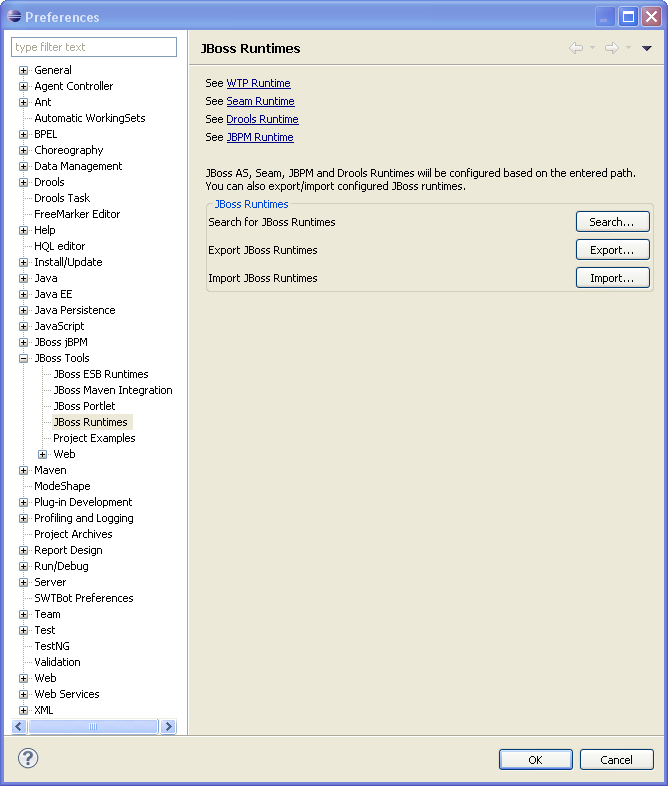

| Runtime detection |

The "Search" action recognizes JBoss AS server, JBoss EAP/EPP/SOA, Seam a standalone Seam, JBPM and Drools runtime.
There is a filter to export JBoss Runtime preferences that can be used within the standard Eclipse Export wizard.
The standard Eclipse Export wizard doesn't export any JBPM and WTP server configurations. The Export/Import action within the Runtime preference page will export/import those configurations too.
Related Jira
|